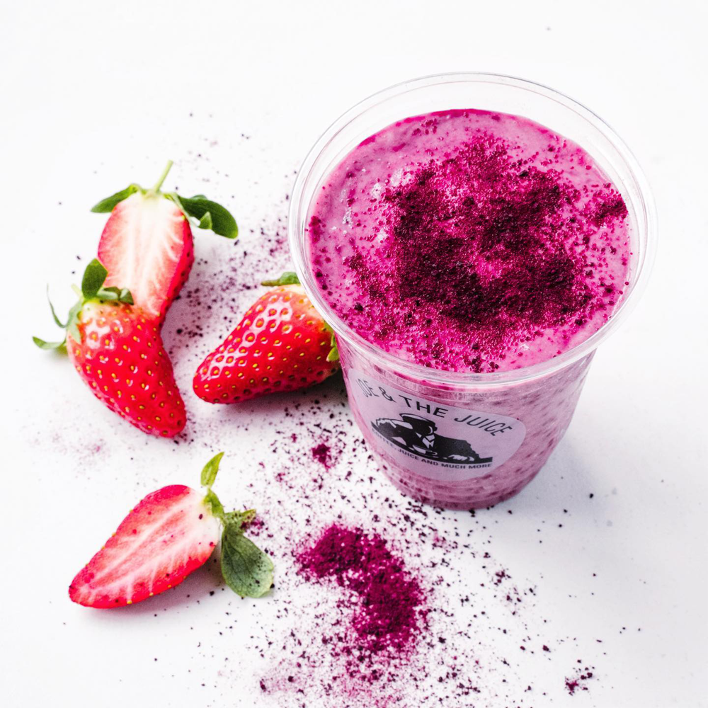
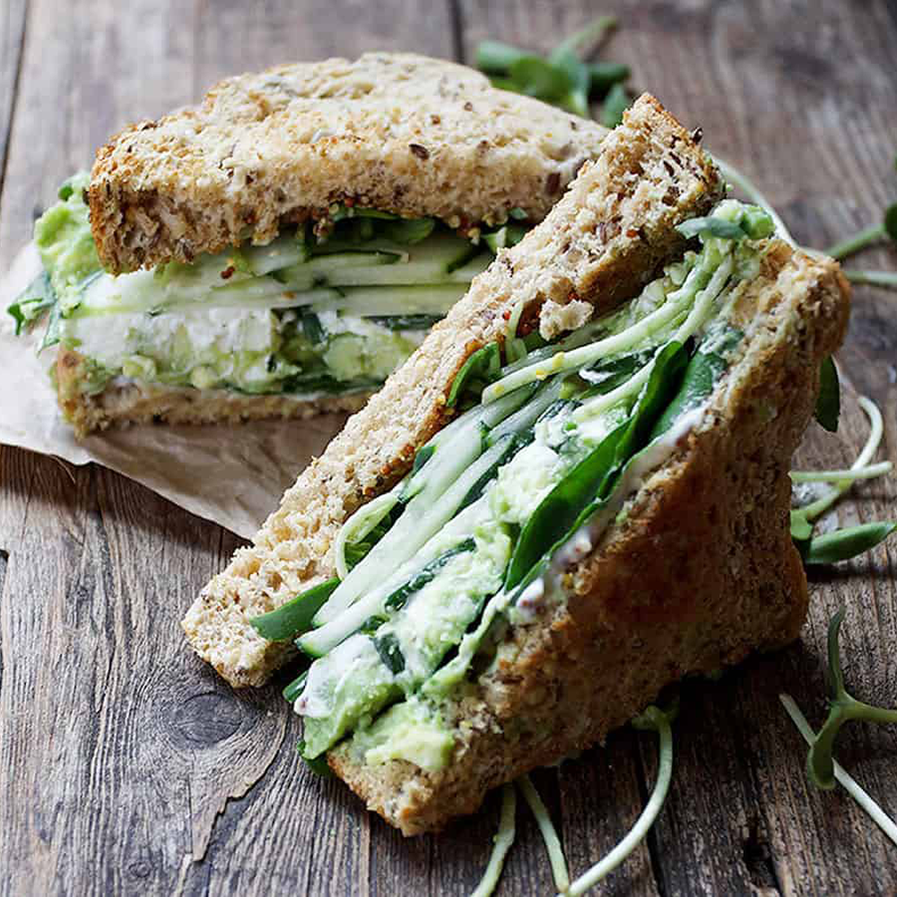

Juicekonceptet som er til for kvinder og mødre!
Vi byder på smagsfulde oplevelser, sundt samvær
og ikke mindst lærerige og spændende events.
Joyn' vores fællesskab i dag!
Gå på opdagelse i vores særlige Joy & the Juice menu, special designet til kvinder og deres
næringsmæssige behov
Pink Artemis Juice
En opløftende juice perfekt til 'mig tid'. Ingredienser: lavet på jordbær, rødbede, granatæble, ingefær, appelsin, gulerødder.
Green Goddess Sandwich
En nærende sandwich til din indre gudinde. Ingredienser: surdejsbrød, agurk, spinat, feldtsalat, avocado, græsk yoghurt, hampefrø, og radisse.